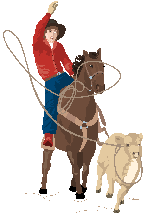

Station Editor, Broadcast
Editor, Default Editor, Configuration,
Thresholds, Home

- Before you use the GUI, edit the xhwrnwr.conf file product list.
- Change all the "CCCHWRNWx" entries to 9-character product
IDs.
- Keep "CCCHWRXXX" in the list, since this serves as a template.
- Edit the hwrnwr.conf file. Change the output product names to match
those in the xhwrnwr.conf file.
- Use the xhwrnwr GUI to select the product ID that you wish to edit.
- You can launch another GUI and select Product # in order to cut and
paste from the Station Editor or Broadcast Editor to your new product.
Home